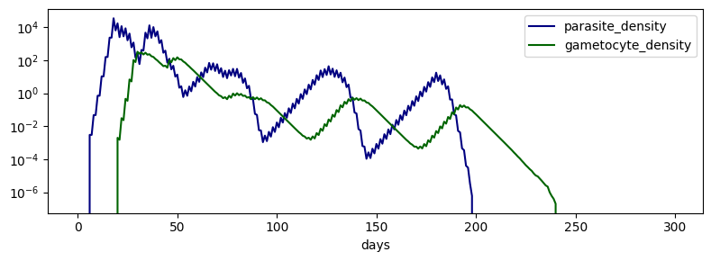

T2 - Infectious Challenge Time Series
[1]:
import numpy as np
import pandas as pd
import matplotlib.pyplot as plt
from emodlib.malaria import IntrahostComponent
[2]:
duration = 300
asexuals = np.zeros(duration)
gametocytes = np.zeros(duration)
ic = IntrahostComponent.create()
ic.challenge()
for t in range(duration):
ic.update(dt=1)
asexuals[t] = ic.parasite_density
gametocytes[t] = ic.gametocyte_density
df = pd.DataFrame({'days': range(duration),
'parasite_density': asexuals,
'gametocyte_density': gametocytes}).set_index('days')
[3]:
df.head(10)
[3]:
| parasite_density | gametocyte_density | |
|---|---|---|
| days | ||
| 0 | 0.000000 | 0.0 |
| 1 | 0.000000 | 0.0 |
| 2 | 0.000000 | 0.0 |
| 3 | 0.000000 | 0.0 |
| 4 | 0.000000 | 0.0 |
| 5 | 0.000000 | 0.0 |
| 6 | 0.003000 | 0.0 |
| 7 | 0.003000 | 0.0 |
| 8 | 0.047676 | 0.0 |
| 9 | 0.047676 | 0.0 |
[4]:
fig, ax = plt.subplots(1, 1, figsize=(8, 3))
df.plot(ax=ax, color=dict(parasite_density='navy', gametocyte_density='darkgreen'))
ax.set(yscale='log')
fig.set_tight_layout(True)
